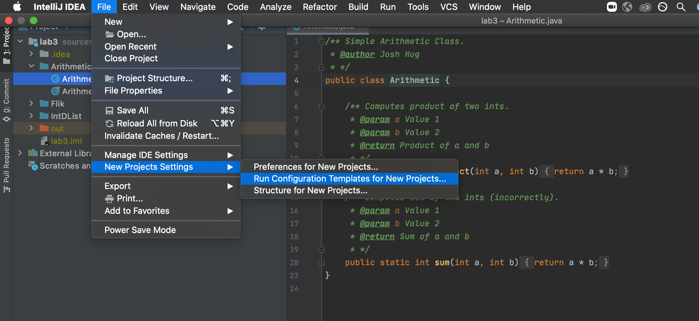
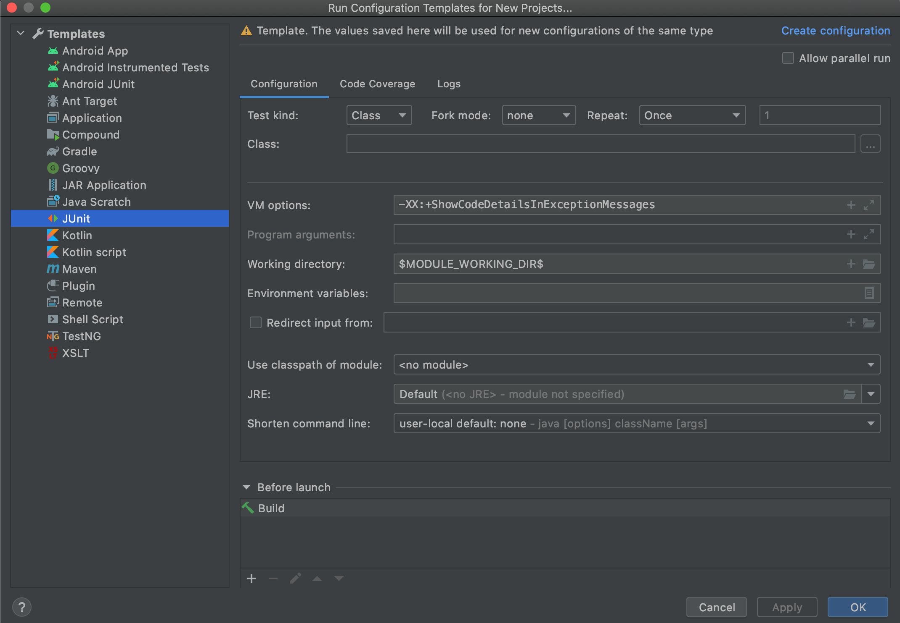
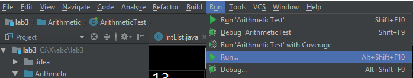
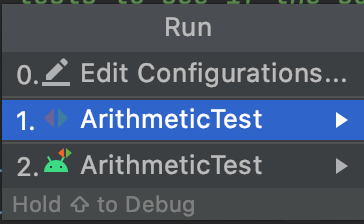
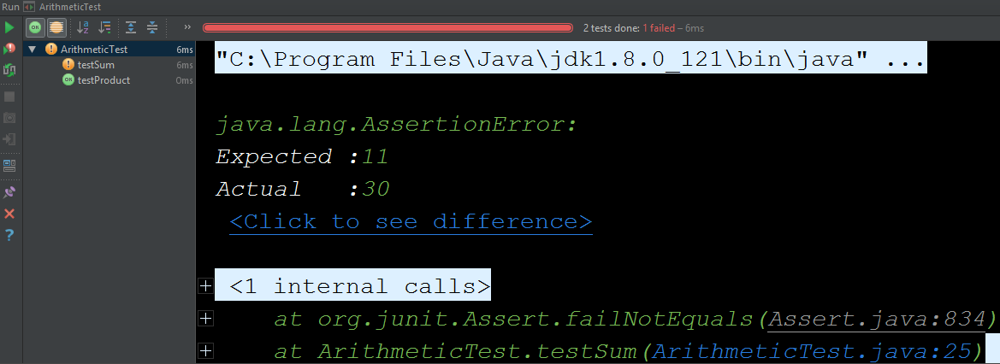
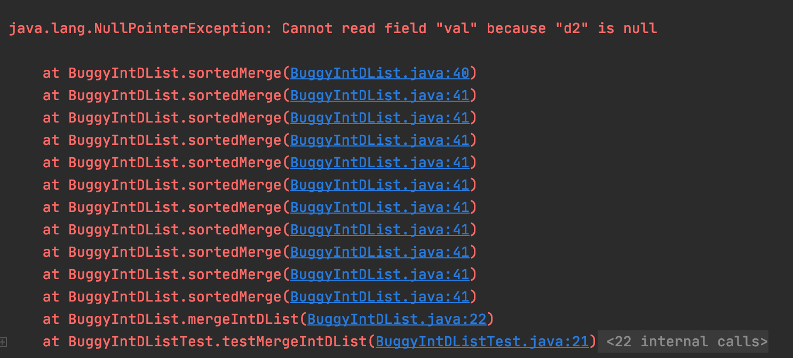
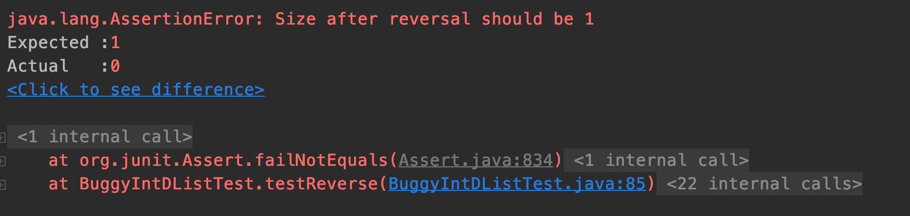

- Pre-lab
- Introduction
- Setting up JUnit configurations
- Running JUnit Tests in IntelliJ (or another IDE)
- IntDLists
- A Debugging Mystery
- Running the 61B Style Checker
- Submission
- Recap
Pre-lab
-
Installing and Using the IntelliJ Plugin: Make sure you’ve had a chance to install and use the CS61B and Java Visualizer IntelliJ plugins. Make sure you know how to check style with the plugin.
-
Make sure your version of the CS61B Plugin is at least 2.0.0 and your version of the Java Visualizer is at least 2.0.1. To do this go to Configure > Plugins > Installed. You should see a list of plugins, including these two plugins. Click on each, and the version number should show to the right of the name.
Introduction
In this lab, you will learn about Unit Testing, JUnit, the 61B style checker, and we’ll also get a bit more debugging experience.
What is JUnit?
JUnit is a Unit Testing Framework for Java.
What is Unit Testing?
Unit Testing is a great way to rigorously test each method of your code and ultimately ensure that you have a working project.
The “Unit” part of Unit Testing comes from the idea that you can break your program down into units, or the smallest testable part of an application. Therefore, Unit Testing enforces good code structure (each method should only do “One Thing”), and allows you to consider all of the edge cases for each method and test for them individually.
In this class, you will be using JUnit to create and run tests on your code to ensure its correctness. And when JUnit tests fail, you will have an excellent starting point for debugging. Furthermore, if you have some terrible bug that is hard to fix, you can use git to revert back to a state when your code was working properly according to the JUnit tests.
JUnit Syntax
JUnit tests are written in Java, similar to LinkedListDequeTest from Project
1A. However, the JUnit library implements all the boring stuff like printing
error messages, making test writing much simpler.
To see an example JUnit test, navigate to the Arithmetic directory and open
ArithmeticTest.java in your favorite text editor (don’t open IntelliJ just
yet).
The first thing you’ll notice are the imports at the top (IntelliJ sometimes
shortens these to import ...; just click on the ... to expand this and
see what exactly is being imported). These imports are what give you easy
access to the JUnit methods and functionality that you’ll need to run JUnit
tests. For more information, see the Testing lecture video.
Next, you’ll see that there are two methods in ArithmeticTest.java:
testProduct and testSum. These methods follow this format:
@Test
public void testMethod() {
assertEquals(<expected>, <actual>);
}
assertEquals is a common method used in JUnit tests. It tests whether a
variable’s actual value is equivalent to its expected value.
When you create JUnit test files, you should precede each test method with a
@Test annotation, and can have one or more assertEquals or assertTrue
methods (provided by the JUnit library). All tests must be non-static.
This may seem weird since your tests don’t use instance variables and you
probably won’t instantiate the class. However, this is how the designers of
JUnit decided tests should be written, so we’ll go with it.
From this point forwards in 61B, we will officially be working in IntelliJ. If you want to run your code from the terminal, refer to this supplemental guide. While you’re welcome to do this, the staff will not provide official support for command line compilation and execution or other text editors/IDEs.
Setting up JUnit configurations
We will need to do a tad bit more to set up JUnit to be as helpful as possible for us. Specifically, we’ll be adding what are called VM options for IntelliJ to use whenever we’re running a JUnit test or test suite. VM options are meta-options that the JVM is given that can alter the way things are run, and we want to add just 1 VM option that will make NullPointerException messages much easier to understand.
Firstly, go to File > New Project Settings > Run Configuration Templates for New
Projects... and click it

Now, on the left side, you should click on JUnit. In the text bar labeled VM
options, you should delete whatever might already be there and paste the
following:
-XX:+ShowCodeDetailsInExceptionMessages
It should look like this:

Go ahead and hit Apply then OK in the bottom right corner.
Now, any future IntelliJ projects you open will have this VM option set.
Running JUnit Tests in IntelliJ (or another IDE)
Open up IntelliJ and import/open your lab 3 folder that you pulled from the skeleton. Repeat the steps from Lab 2 Setup, Project Setup and don’t forget to import the javalib libraries!
Open up lab3/Arithmetic/ArithmeticTest.java in IntelliJ. Now click the Run... option under the Run
menu at the top of IntelliJ as shown in the following screenshot.

After clicking “Run…”, you should some number of options that will look something like the list below. The number of items in your list may vary.

The option we care about is the one that says “ArithmeticTest” next to the red and green arrows (next to the 1. in the image above).
Select this one, and you should see something like:

This is saying that the test on line 25 of ArithmeticTest.java failed. The test
expected 5 + 6 to be 11, but the Arithmetic class claims 5 + 6 is 30. You’ll
see that even though testSum includes many assert statements, only one
failure is shown.
This is because JUnit tests are short-circuiting – as soon as one of the asserts in a method fails, it will output the failure and move on to the next test.
Try clicking on the ArithmeticTest.java:25 in the window at the bottom of the
screen and IntelliJ will take you straight to the line which caused the test to
fail. This can come in handy when running your own tests on later projects.
Now fix the bug, either by inspecting Arithmetic.java and finding the bug, or
using the IntelliJ debugger to step through the code until you reach the bug.
After fixing the bug, rerun the test, and if you’re using the default renderer, you should get a nice glorious green bar. Enjoy the rush.
IntDLists
Now a real-CS61B application of JUnit tests: IntLists. We’re going to go through
a short debugging exercise in BuggyIntDList.java. BuggyIntDList is a buggy
implementation of a doubly linked int list. There are 2 files involved in this
exercise.
BuggyIntDList.java: contains two buggy methods: sortedMerge and reverse. You will be tasked with fixing these two methods.BuggyIntDListTest.java: contains set of tests for these buggy methods. Once these methods are fixed correctly, all of the tests should pass.
Within BuggyIntDList.java you will need to debug two functions. The first
function is mergeIntDLists, which merges two sorted IntDLists into a single
sorted IntDList by calling sortedMerge. This is a driver method that just
calls sortedMerge method with front DNodes of both IntDLists. This method
should be destructive.
One note before you start: The tests we provide you are all that’s required to
pass the autograder. However, you’ll notice that the tests immediately test
large IntDLists which may be daunting to debug. We encourage you to write
tests that start with smaller cases to practice writing tests and to make your
debugging experience easier.
Try running the main method in BuggyIntDListTest.java and see what the output
is in Run window. You will observe that the two test cases testReverse and
testMergeIntDList have failed with some problems. Click on the
testMergeIntDList in the debugging panel with a red exclamation sign in left
pane. You will see the following details:

There are a few important things to note here. First, we can read the type of
exception that was thrown - NullPointerException. To read the Oracle docs on
what a NullPointerException is, take a look here. To summarize what they
say, a NullPointerException is thrown when null is used where an object is
required (for example, trying to call an instance method of a null object, or
accessing or modifying the instance variables of a null object). The VM option
we added earlier makes this message even more specific: the code is trying to
access the val attribute of variable d2 but d2 is null.
Next, we can see the stack trace. This is a listing of all functions that were
called before the exception was thrown. The stack trace can be read
chronologically from bottom to top - that is, first the method testMergeIntDList
was called, and then mergeIntDList was called, and then the method sortedMerge
was called. Since sortedMerge is at the top of our stack trace, we know that
it was this function in which the exception was thrown. The stack trace also
provides us the exact line numbers where functions are called.
Use the stack trace, along with the skeleton code provided to you to fix the
sortedMerge method in BuggyIntDList.java.
Once you understand what a NullPointerException is, the next question is why
would this occur? To answer this, use the IntelliJ Debugger and set a break
point at the line 32 in BuggyIntDList.java which is sortedMerge method and
click Debug in Run menu.
It also highly recommended that you understand how to efficiently debug your code using breakpoints, Step Over, Step Into and Step Out functionality in IntelliJ. We have put up a Debugging Guide for easy reference. Make sure you go through it if you do not understand how to debug code. We will be using this guide as reference in all the future labs, homeworks and projects.
Now that we know the error, and the line the error occurs on, we need to reflect on what could be causing this error. Are we trying to access an instance variable of a null object? How did that object become null? Should it be allowed to be null? These are questions you should ask yourself to hone down the bug to its source. Write additional lines of code in the designated space (if needed) to fix the problem.
After you think you’ve solved the problem, try running the tests again to see if the method is performing its functionality correctly. There are multiple issues with the method and might need more than one line changed to be fixed.
Let us now move on to reverse and understand what the test failure means:

We observe that the test is marked with a yellow cross in left pane of debugger window instead of a red one. It indicates that the test was able to run successfully without any exception, but is not performing as expected.
Try drawing a box and pointer diagram, or using the Java Visualizer. When does
this error occur, and what would be the simplest fix? Implement your fixes by
editing the reverse function. To check that your reverse implementation is
correct, complete the following tasks:
-
Draw a box and pointer diagram (or use the visualizer) to see what your code is doing, and verify you are assigning all pointers correctly.
-
Write your own comprehensive tests to verify the functionality of your code.
Although not required for this lab, you are encouraged to write your own unit
tests by creating new java files named MyBuggyIntDListTest.java if you feel
like it. Writing proper and comprehensive unit tests is essential in making sure
that your methods have been correctly implemented and working as expected for
various scenarios which we call edge cases. Make sure to submit those files as
well, if you end up creating more tests.
A Debugging Mystery
Another important skill to learn is how to exhaustively debug. When done properly, debugging should allow you to rapidly narrow down where a bug might be located, even when you are debugging code you don’t fully understand. Consider the following scenario:
Your company, Flik Enterprises, has released a fine software library called Flik.java that is able to determine whether two Integers are the same or not.
You receive an email from someone named “Horrible Steve” who describes a problem they’re having with your library:
"Dear Flik Enterprises,
Your library is very bad. See the attached code. It should print out 500
but actually it's printing out 128.
(attachment: HorribleSteve.java)"
Using any combination of the following techniques, figure out whether the bug is in Horrible Steve’s code or in Flik enterprise’s library:
- Writing JUnit tests for the Flik library. If you want to try this, you will
to create a new file in the
Flikdirectory and importjunit. Look to the tests from the previous problems for how to do this. - Using the IntelliJ debugger, especially conditional breakpoints or breaking on exceptions (try this: Run -> View Breakpoints -> Check “Java Exceptions Breakpoints” -> Uncheck “Caught Exceptions”).
- Using print statements.
- Refactoring Horrible Steve’s code. Refactoring means changing the syntax without changing the functionality. This may be hard to do since HS’s code uses lots of weird stuff.
HorribleSteve.java and Flik.java both use syntax we haven’t covered in class. We do not expect you to fix the bug or even understand why it’s happening once you have found it. Instead, your job is simply to find the bug.
Tip: JUnit provides methods assertTrue(boolean) and assertTrue(String,
boolean) that you might find helpful.
Try to come up with a short explanation of the bug! Google is your friend since we have not covered this exact issue in Lecture. Discuss with your lab partner and check in with your TA or an AI to see if your answer is right (not for a grade).
Running the 61B Style Checker
We will be using the CS 61B IntelliJ Plugin to check for style (right click on
the file, then select “Check Style”). Try it out on BuggyIntDList.java in your
IntDList folder. You should see that there are a lot of style errors. Most of
these should already be resolved if you replaced all the FIXMEs with your code,
but if not, you should resolve these errors. If you’re ever stuck on style
issues, consult the official 61B style guide.
When you pass the style check, the output should look like:
Running style checker on 1 file(s)...
Style checker completed with 0 errors
Submission
As before, push your code to GitHub and submit to Gradescope to test your code.
Recap
In this lab, we went over:
- Unit Testing (big picture)
- JUnit syntax and details
- Writing JUnit tests
- Debugging Using JUnit
- Running the Style Checker